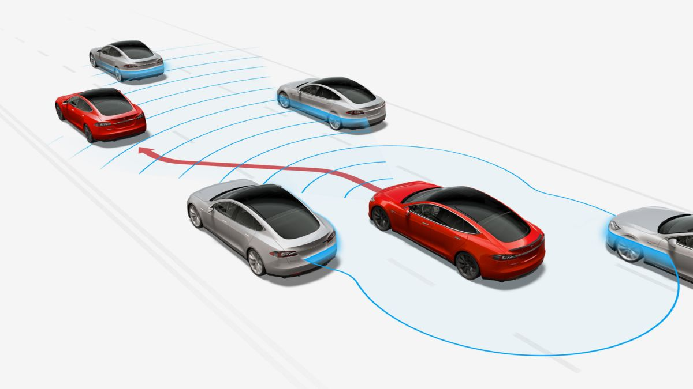

WELCOME TO THE WOLRD OF AI
The intelligence exhibited by machines is termed
Artificial Intelligence (AI)
Artificial Intelligence (AI)
Alexa is a virtual assistant technology largely based
on a Polish speech synthesizer named Ivona,
bought by Amazon in 2013. It helps us in day to day life
like performing home tasks or getting information
ChatGPT is a form of generative AI -- a tool
that lets users enter prompts to receive humanlike
images, text or videos that are created by AI.
Snapchat recently rolled out its AI chatbot, My AI. Powered by OpenAI’s ChatGPT, My AI can offer advice, answer questions, and converse with users. However, unlike ChatGPT, Snapchat’s My AI allows users to customize the chatbot’s name, create a custom avatar for it, and bring it into conversations with friends.
An autopilot is a software or tool that can only manage the aircraft under certain conditions using the vehicle's hydraulic, mechanical and electronic systems. This system, which can follow the flight plan, can stabilize speed and height as well as the location of the front of the aircraft (heading).
Narrow artificial intelligence (narrow AI) is a specific type of artificial intelligence in which a learning algorithm is designed to perform a single task, and any knowledge gained from performing that task will not automatically be applied to other tasks.

Artificial general intelligence (AGI) is the representation of generalized human cognitive abilities in software so that, faced with an unfamiliar task, the AGI system could find a solution. The intention of an AGI system is to perform any task that a human being is capable of.

Expert systems. These AI-based systems mimic human judgement. They can recommend medicine based on patient data and predict molecular structure, for example.
AlphaGo. This is another example of narrow intelligence that excels at a specific type of problem solving. AlphaGo is a computer program that can play the board game Go. Go is a complex game that is difficult for humans to master. In 2016, AlphaGo beat the world champion Lee Sedol in a five-game match.
Strong artificial intelligence (AI), also known as artificial general intelligence (AGI) or general AI, is a theoretical form of AI used to describe a certain mindset of AI development. If researchers are able to develop Strong AI, the machine would require an intelligence equal to humans; it would have a self-aware consciousness that has the ability to solve problems, learn, and plan for the future.
Strong AI aims to create intelligent machines that are indistinguishable from the human mind. But just like a child, the AI machine would have to learn through input and experiences, constantly progressing and advancing its abilities over time
Entertainment: Creating music, visual art, and movies Healthcare: Medical imaging, drug research, and surgery Robotics: Cooking, cleaning, and childcare Engineering: Programming, building, and architecture Security: Detecting fraud, preventing security breaches, and